Магистратура по психологии — это второй уровень высшего образования для подготовки магистра, освоившего научно-практические программы психологии; мы составили рейтинг лучших курсов, где можно дистанционно и онлайн учиться в дистанционной, заочной, гибридной и форматах удаленного обучения, чтобы поступить на клиническую, организационную траектории или психологическое консультирование в рамках электронного образования и современных программ.
Лучшие дистанционные курсы магистратуры по психологии
Лучшие дистанционные курсы переподготовки по психологии
Магистратура по психологии – Институт психологии №1 при ТГУ
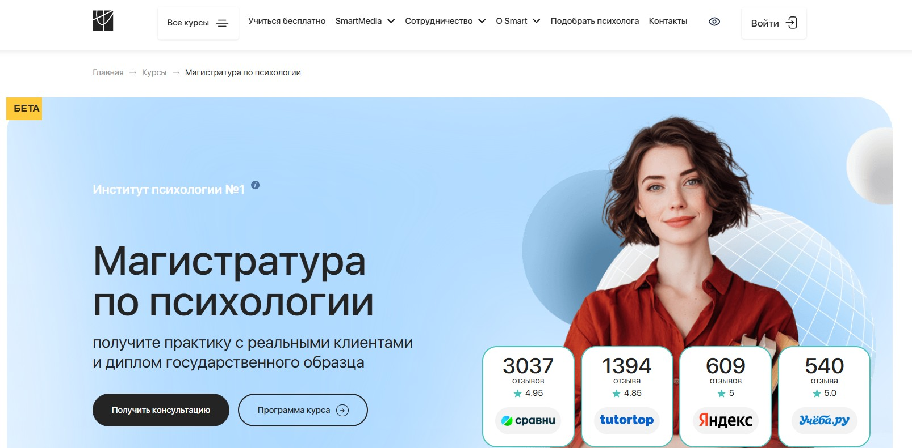⭐ Рейтинг: 5.0
- Сайт: smart-inc.ru/management-psychology
- Полная стоимость: От 106 200 ₽ за семестр. Доступна рассрочка, возможен налоговый вычет 13% от суммы обучения.
- Рассрочка: До 36 месяцев без переплат, условия зависят от выбранного направления.
- Длительность: 2,5 года – программа по психологическому консультированию.
- Документ: Диплом магистра государственного образца от Тольяттинского государственного университета + диплом о профессиональной переподготовке от Smart.
- Трудоустройство: Доступ в Центр карьеры, поддержка при запуске частной практики, возможность стать членом ОППЛ и АППП на льготных условиях.
Особенности курса:
Обучение проходит полностью дистанционно, что позволяет совмещать учёбу и работу. Программа сочетает фундаментальную теорию и практическую подготовку с реальными клиентами. Студенты начинают практиковать уже через 12 месяцев благодаря включению в программы SmartHelp и SmartMental. Все преподаватели – действующие практикующие специалисты с научными степенями. Каждому студенту назначается куратор, доступный 24/7. Образовательная программа включает два квалификационных диплома: государственный и от института. Выпускники получают доступ к профессиональным сообществам и карьерной поддержке.
Преподаватели курса:
-
Оксана Денисова — доктор педагогических наук, кандидат психологических наук, профессор, руководитель магистерской программы, участник проектов «Росдистант» и «Умный университет».
-
Светлана Варнавская — сертифицированный коуч ICF (4000+ часов), практикующий психолог, специалист по трансформационному коучингу и КПТ.
Кратко о программе курса:
- Психологическое консультирование: работа с личными, семейными и кризисными запросами.
- Диагностика и выбор стратегии помощи клиенту.
- Этические нормы и юридические аспекты профессии.
- Выбор и углублённое изучение специализации: КПТ, арт-терапия, сексология, бизнес-психология и др.
- Методы нейропсихологической диагностики (в рамках направления детской психологии).
- Оценка персонала, командообразование, психологическое сопровождение изменений (в программе управления).
- Обучение в формате практико-ориентированных кейсов и групповых сессий.
- Итоговая аттестация — с участием экспертов и персональной обратной связью.
Чему научитесь:
Вы освоите современные методы психологического сопровождения, научитесь работать с реальными клиентами, проведёте диагностику, подберёте подходящие стратегии коррекции и начнёте практику до окончания обучения.
Преимущества и особенности:
- Практика на реальных клиентах уже через год обучения.
- Два документа — госдиплом и свидетельство о переподготовке.
- Полностью дистанционный формат без необходимости посещать лекции.
- Индивидуальное сопровождение и поддержка на всех этапах.
- Интеграция в профессиональные сообщества психологов.
- Возможность налогового вычета и рассрочки без переплат.
- Доступ к карьерному центру и помощи в старте практики.
- Уникальные обучающие модули: бизнес-психология, MBA, нейропсихология.
Читайте отзывы учеников:
Выпускники отмечают высокий уровень преподавания, практико-ориентированность курса и реальную возможность начать принимать клиентов ещё до выпуска. Часто упоминают доступность кураторов, качество материалов и изменение жизни после обучения. Многие подчёркивают, что программа помогла сменить профессию и начать приносить пользу людям.
Коучинг и психологическое консультирование – Московский институт технологий и управления
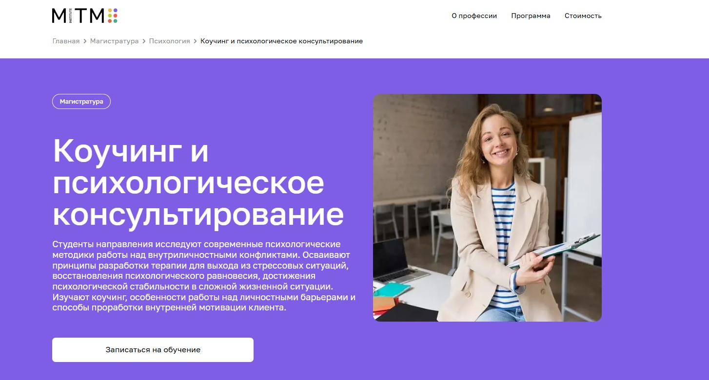⭐ Рейтинг: 5.0
- Сайт: mitm.institute/kouching-i-psihologicheskoe-konsultirovanie--magistratura
- Полная стоимость: от 9 170 ₽ в месяц при рассрочке, возможен налоговый вычет 13% от стоимости обучения.
- Рассрочка: беспроцентная рассрочка на 12 месяцев, доступны кредиты от Сбера и Тинькофф.
- Длительность: 2 года 6 месяцев дистанционно.
- Документ: диплом магистра государственного образца.
- Трудоустройство: участие в программе трудоустройства после окончания, помощь в построении карьеры.
Особенности курса:
Программа дистанционной магистратуры ориентирована на тех, кто стремится освоить современные практики психологической помощи и коучинга. Обучение построено на научных исследованиях и проверенных методиках, включает анализ внутриличностных конфликтов, развитие навыков терапии и стратегии выхода из стрессовых состояний. Акцент ставится на личностный рост, развитие мотивации и практические навыки консультирования. Все занятия проводятся онлайн, что позволяет учиться из любой точки страны или мира без привязки к расписанию. Курс подойдёт и тем, кто хочет сменить сферу деятельности, и специалистам, стремящимся подтвердить квалификацию.
Кратко о программе курса:
- Стратегии психологического исследования.
- Качественные и количественные методы анализа данных.
- Проективные методики в психологии.
- Планирование эмпирического и теоретического исследования.
- Особенности межкультурного взаимодействия.
- Психология личностной самооценки.
- Методология коучинга и проработка внутренних барьеров.
- Технологии групповой и индивидуальной психологической поддержки.
Чему научитесь:
Научитесь проводить психологическое консультирование, помогать клиентам снимать стресс, восстанавливать стабильность и достигать целей. Освоите методы мотивации, диагностики и терапии личностных конфликтов, станете компетентным специалистом в области психологии и коучинга.
Преимущества и особенности:
- Дистанционное обучение — учитесь в удобное время и из любого места.
- Государственный диплом магистра с правом работать по специальности.
- Возможность поступления без ЕГЭ при наличии диплома о высшем образовании.
- Поддержка куратора 24/7 и доступ к записям всех лекций до окончания курса.
- Скидка 30% и бесплатный курс в подарок при поступлении до 10 сентября.
- Беспроцентная рассрочка и образовательные кредиты с выгодными условиями.
- Перевод из другого вуза без потери срока обучения.
Читайте отзывы учеников:
Студенты отмечают доступность материалов, гибкий график и поддержку кураторов. Многие подчёркивают, что программа помогла в карьерном росте и открытии частной практики. Особо ценят возможность быстро оформить документы и начать обучение, а также качество практических заданий, соответствующих запросам современных работодателей.
Магистратура по психологии личности – Институт общественных наук РАНХиГС и Психодемия
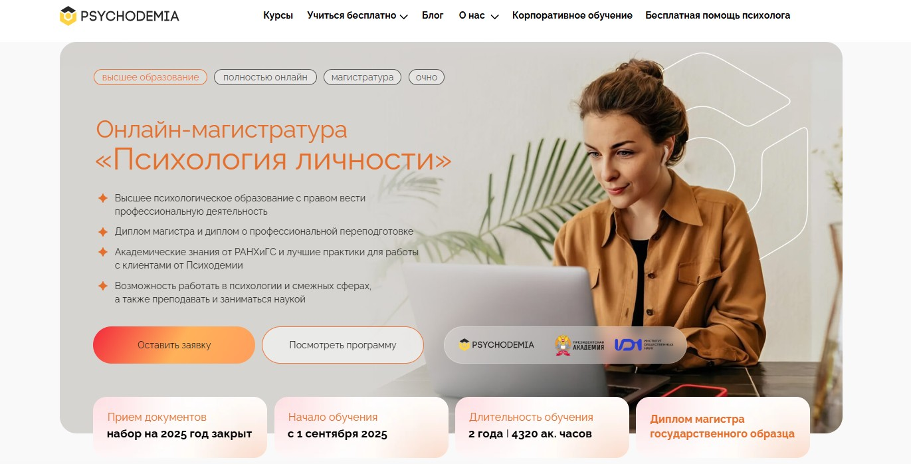⭐ Рейтинг: 5.0
- Сайт: psychodemia.ru/mag_psypersonality
- Полная стоимость: 350 000 рублей, доступен образовательный кредит от Сбера с господдержкой, возможен налоговый вычет за обучение.
- Рассрочка: От 263 ₽ в месяц на первый год, оплата по семестрам без переплат.
- Длительность: 2 года, 4320 академических часов.
- Документ: Диплом магистра государственного образца от РАНХиГС и диплом о профессиональной переподготовке.
- Трудоустройство: Поддержка в трудоустройстве, помощь в построении карьерного трека, практика в холдинге Ultimate Education и партнёрских организациях.
Особенности курса:
Программа сочетает академическую базу от РАНХиГС и прикладные методики от ведущего онлайн-института Психодемии. Обучение проходит полностью онлайн, подходит для совмещения с работой. Студенты работают с реальными кейсами, развивают навыки индивидуального консультирования, коучинга и групповых программ. Включение в учебный процесс лабораторных практик, семинаров и симуляций делает подготовку максимально приближённой к профессиональной деятельности. Особое внимание уделено запросам клиентов — от эмоционального выгорания до личностных кризисов. По окончании — защита магистерской диссертации в очном формате.
Преподаватели курса:
-
Елена Агадуллина — кандидат психологических наук, специалист по социальной психологии, руководитель лаборатории исследования социального неравенства НИУ ВШЭ (до 2023), автор статей в Science, Nature Communications, PNAS.
-
Преподавательский состав включает практикующих психологов и научных сотрудников с опытом в ведущих вузах и клиниках.
Кратко о программе курса:
- Современные теории психологии личности.
- Методы консультирования и техники работы с клиентскими запросами.
- Практика в форматах: индивидуальные сессии, коучинг, тренинги, групповые программы.
- Разработка тестов и упражнений для клиентов.
- Студенческая практика в Ultimate Education и партнёрских организациях.
- Семинары с разбором кейсов и отработкой навыков.
- Подготовка и защита магистерской диссертации.
Чему научитесь:
Вы освоите доказательные методы работы с личностью, научитесь проводить консультирование, коучинг и тренинги, сможете применять знания в психологии, HR, образовании и маркетинге, а также вести научную и преподавательскую деятельность.
Преимущества и особенности:
- Диплом гособразца с правом профессиональной деятельности в психологии.
- Практическая подготовка на реальных кейсах и симуляциях.
- Гибкий онлайн-формат — учиться можно из любой точки мира.
- Сочетание академической теории и современных практик от ведущих экспертов.
- Поддержка студентов: отсрочка от армии, льготы, помощь в трудоустройстве и карьерном росте.
- Программа ориентирована на запросы рынка — спрос на психологов вырос на 30% с 2022 года.
Читайте отзывы учеников:
Слушатели отмечают высокий уровень преподавания, актуальность материалов и сильную практическую составляющую. Многие подчёркивают поддержку кураторов, удобство графика и востребованность полученных компетенций. Большое количество выпускников продолжает карьеру в консультировании, преподавании и коучинге. Высокий процент завершения — 93% — говорит о вовлечённости и качестве обучения.
Магистратура по бизнес-психологии – Московский институт психоанализа и Психодемия
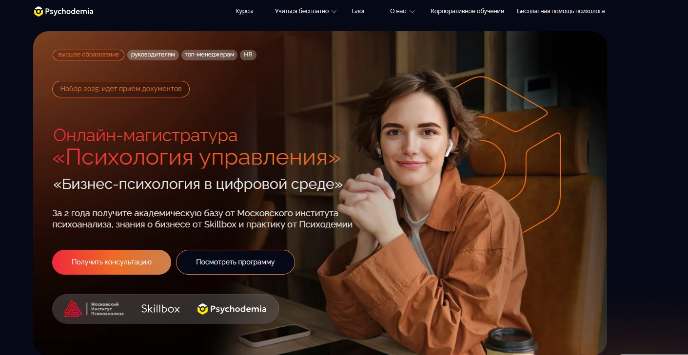⭐ Рейтинг: 5.0
- Сайт: psychodemia.ru/biznes-psikhologiya-v-tsifrovoy-srede
- Полная стоимость: 320 000 рублей с возможностью рассрочки, образовательного кредита с господдержкой и налогового вычета.
- Рассрочка: От 240 ₽ в месяц, оплата по семестрам, доступен кредит от Сбера.
- Длительность: 2 года (4 семестра).
- Документ: Диплом магистра государственного образца по направлению 37.04.01 Психология, удостоверение о повышении квалификации от Психодемии, сертификат от Skillbox.
- Трудоустройство: 20 тыс. выпускников нашли работу через карьерные программы, доступ к 175 партнёрским компаниям для стажировки и трудоустройства.
Особенности курса:
Образовательная программа сочетает академическую базу от Московского института психоанализа, бизнес-навыки от Skillbox и практические кейсы от Психодемии. Обучение проходит полностью онлайн — вы можете подключаться с любой точки мира. Вся теория закрепляется через анализ реальных бизнес-ситуаций, тренировочные модели и производственную практику в IT-компаниях. Программа ориентирована на руководителей, HR-специалистов и топ-менеджеров, желающих управлять командами, внедрять изменения и строить эффективные процессы в цифровой среде.
Преподаватели курса:
-
Гули Базарова — кандидат психологических наук, директор Московской школы практической психологии, executive-коуч, амбассадор бизнес-школы «Сколково», более 25 лет опыта в корпоративной психологии.
-
Тахир Базаров — доктор психологических наук, профессор МГУ, президент Ассоциации бизнес-психологов России, практикующий консультант.
-
Александр Крымов — кандидат психологических наук, автор книг по управлению и проектной деятельности, бизнес-консультант.
-
Максим Цветков — клинический и семейный психолог, преподаватель МИП, врач-психолог в психиатрической больнице №3 Москвы.
Кратко о программе курса:
- Психология управления командами и мотивации сотрудников.
- Оценка компетенций, коучинг и подбор персонала с акцентом на сильные стороны.
- Разработка обучающих программ и внедрение культуры развития.
- Работа с конфликтами, эмпатия и построение эффективной коммуникации.
- Внутрикорпоративные коммуникации и деловое взаимодействие.
- Маркетинговые исследования, анализ аудитории и создание сообщений для роста прибыли.
- Управление изменениями, проектная деятельность и оптимизация бизнес-процессов.
- Технологии проведения CX-исследований и оценка опыта клиентов и сотрудников.
- Психологическое сопровождение цифровой трансформации.
- Создание и проведение бизнес-тренингов.
Чему научитесь:
Вы научитесь управлять командами на расстоянии, оценивать персонал, внедрять обучающие программы, решать конфликты, анализировать данные и строить процессы на основе метрик и исследований.
Преимущества и особенности:
- Государственный диплом магистра и три документа об образовании по окончании.
- Практика в крупных IT-компаниях и возможность совмещать учёбу с работой.
- Гибкий онлайн-формат: лекции в записи и прямые эфиры из любой точки мира.
- Академический руководитель — признанный эксперт с опытом более 25 лет.
- Возможность получить отсрочку от армии и воспользоваться студенческими льготами.
- Защита дипломного проекта в очном формате с участием экспертной комиссии.
- Рассрочка и образовательный кредит с господдержкой от Сбера.
Читайте отзывы учеников:
Выпускники подчёркивают высокий уровень преподавателей, актуальность материалов и сильную практическую составляющую. Многие отмечают, что сразу после старта программы начали применять инструменты на работе — в HR, управлении командами и проектной деятельности. Также часто упоминается удобство формата — возможность учиться без отрыва от карьеры. 93% слушателей доводят обучение до конца.
Магистратура по консультативной психологии – Московский институт психоанализа
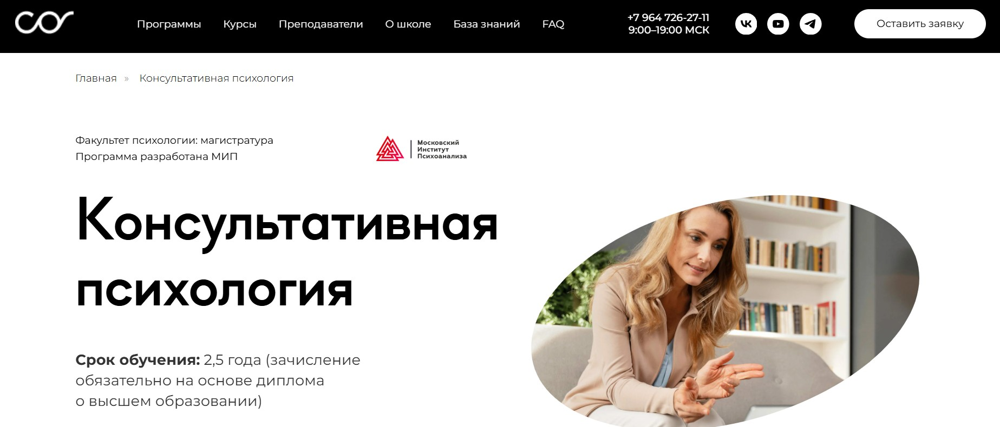⭐ Рейтинг: 4.9
- Сайт: psychology.sredaobuchenia.ru/mob/advisorypsy
- Полная стоимость: Уточняется при консультации, предусмотрена беспроцентная рассрочка, возможность налогового вычета 13%.
- Рассрочка: От 7 500 ₽ в месяц на срок до 24 месяцев.
- Длительность: 2,5 года (для поступления требуется диплом о высшем образовании).
- Документ: Диплом магистра установленного образца по направлению 37.04.01 – психология.
- Трудоустройство: Выпускникам помогают запустить частную практику, предоставляют доступ к базе клиентов и методическим ресурсам для старта карьеры.
Особенности курса:
Программа подготовки магистров ориентирована на формирование практических навыков работы с клиентами в сложных жизненных ситуациях. Обучение проходит в онлайн-формате с возможностью учиться в удобное время и из любой точки мира. Преподаватели — действующие практикующие психологи, психотерапевты и преподаватели ведущих вузов. Студенты осваивают современные подходы: гештальт, когнитивно-поведенческую терапию, арт-терапию, работу с психосоматикой и сексологические аспекты. Учебный процесс включает практикумы, вебинары и работу с реальными кейсами. Записи занятий остаются в личном кабинете, что позволяет повторять материал в любое время.
Кратко о программе курса:
- Методы психологической диагностики и тестирования в консультировании
- Теория и практика индивидуального психологического консультирования
- Семейное консультирование: методология и технологии
- Гештальт-подход и экзистенциально-гуманистическая психология
- Когнитивно-бихевиоральная терапия и её применение
- Основы арт-терапии и её возможности в работе с клиентами
- Психосоматика: связь тела и психики
- Сексология и терапия сексуальных расстройств
- Социально-психологический тренинг в семейной работе
- Актуальные вопросы гендерной психологии и современной семьи
- Методология исследований в психологии
- Качественные и количественные методы сбора данных
- Планирование и реализация эмпирических проектов
- Отрасли психологической практики и системы помощи
- Преподавание психологии в образовательных организациях
Чему научитесь:
Вы освоите ключевые методы консультирования, научитесь проводить диагностику, работать с кризисными состояниями и строить эффективные терапевтические стратегии. Получите навыки ведения индивидуальной и семейной практики, поймёте, как применять разные психологические подходы в реальной работе с клиентами.
Преимущества и особенности:
- Дистанционное обучение 4 раза в неделю во второй половине дня — подходит работающим и тем, кто в декрете.
- Доступ к записям всех вебинаров и материалам на учебной платформе.
- Обучение от практикующих психологов с сильной экспертизой и клиническим опытом.
- Государственный диплом, который открывает возможность работать в вузах, клиниках и частной практике.
- Фокус на практических сессиях и отработке навыков, а не только на лекциях.
- Требуется высшее образование, что гарантирует высокий уровень группы.
- Очная защита диплома — всего один выезд в Москву в конце обучения.
- Поддержка кураторов на протяжении всего срока обучения.
Читайте отзывы учеников:
Бывшие студенты отмечают высокую практическую ценность программы, профессионализм преподавателей и продуманный онлайн-формат. Многие подчёркивают, что курс помог не только освоить профессию, но и лучше понимать себя и близких. Особенно ценят доступность материалов и возможность учиться без разрыва с работой или семьёй. Также часто упоминают поддержку кураторов и наставников, которые помогают разбирать сложные случаи.
Магистратура по организационной психологии – Университет «Синергия»
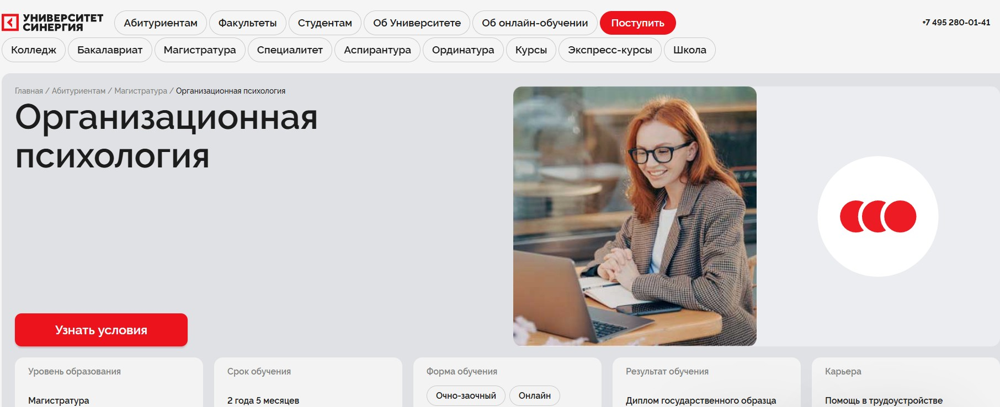⭐ Рейтинг: 4.9
- Сайт: synergyonline.ru/abiturientam/programs/organizaczionnaya_psixologiya_bakalavriat
- Полная стоимость: Стоимость уточняется при консультации, возможна рассрочка, налоговый вычет и поддержка в получении гранта на обучение.
- Рассрочка: До 36 месяцев с минимальным ежемесячным платежом — индивидуальные условия после подачи заявки.
- Длительность: 2 года 5 месяцев обучения в очно-заочной и онлайн-форме.
- Документ: Диплом государственного образца о высшем образовании с присвоением степени магистра.
- Трудоустройство: Гарантированная помощь в трудоустройстве — 85% выпускников находят работу с поддержкой центра карьеры.
Особенности курса:
Программа подготовки магистров по организационной психологии ориентирована на практическое применение знаний в бизнесе и управлении персоналом. Студенты учатся применять современные HR-технологии, решать задачи подбора кадров и развивать профессиональные компетенции сотрудников. Обучение проходит на основании государственной аккредитации, а весь учебный процесс доступен через мобильное приложение с расписанием, домашними заданиями и обратной связью от преподавателей. Программа включает супервизию, тренинги и вебинары от ведущих экспертов в области психологии организаций.
Преподаватели курса:
-
Позина Марина Борисовна — заведующая кафедрой психологии, кандидат психологических наук, доцент, сертифицированный профконсультант.
-
Пензина Нелла Ильинична — доцент кафедры психологии, кандидат экономических наук, практикующий организационный психолог.
Кратко о программе курса:
- Психология самооценки
- Тайм-менеджмент для СЕО
- Современные HR-технологии
- Профилактические психолого-педагогические программы
- Методы поддержки профессиональной компетенции в работе организационного психолога (супервизия)
- Практические модули по отбору персонала и развитию команды
- Кейс-стади из реальных бизнес-практик
- Подготовка к итоговой аттестации и защита выпускной квалификационной работы
Чему научитесь:
Вы освоите методы оценки и развития персонала, научитесь управлять организационными изменениями, внедрять эффективные HR-стратегии и проводить консультирование в корпоративной среде. Полученные компетенции позволят строить карьеру в кадровых службах, HR-агентствах и консалтинговых компаниях.
Преимущества и особенности:
- Государственный диплом, подтверждающий высшее образование и степень магистра.
- Гибкий формат — очно-заочное и онлайн-обучение доступно из любой точки мира.
- Карьерная поддержка с первого курса: резюме, собеседования, подбор вакансий.
- Интерактивная платформа с мобильным приложением для удобного учебного процесса.
- Вебинары и мастер-классы от практикующих HR-экспертов и карьерных консультантов.
- Программа разработана с акцентом на реальные бизнес-задачи и профессиональные вызовы.
- Доступ к бесплатному курсу по поиску работы с персональным сопровождением.
Читайте отзывы учеников:
Слушатели отмечают высокий уровень преподавания, актуальность материала и сильную практико-ориентированную составляющую программы. Многие подчёркивают поддержку центра карьеры и помощь в трудоустройстве. Удобство дистанционного формата, доступность преподавателей и качественная организация процесса — ключевые плюсы, которые чаще всего упоминаются выпускниками.
Магистерская программа «Психоанализ и психоаналитическая психотерапия» – НИУ ВШЭ
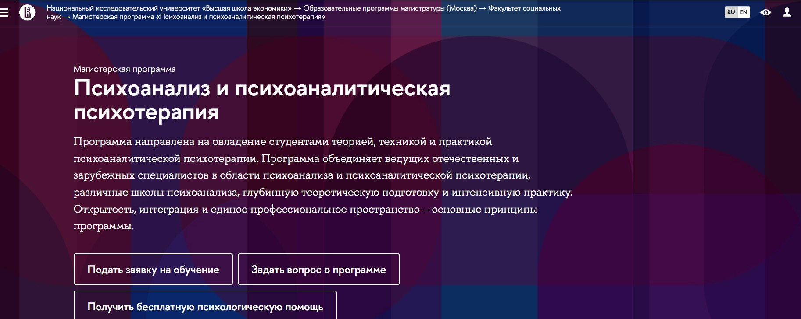⭐ Рейтинг: 4.9
- Сайт: https://view.edpstep.com/click?o=80&a=459&sub_id1=magistratura-po-psihologii&sub_id2=vercel&deep_link=https://view.edpstep.com/click?o=80&a=459&sub_id1=magistratura-po-psihologii&sub_id2=vercel&deep_link=https://www.hse.ru/ma/therapy/
- Полная стоимость: Обучение доступно на платной основе; возможен налоговый вычет за образование. Гранты и скидки рассматриваются индивидуально.
- Рассрочка: Доступна беспроцентная рассрочка на весь срок обучения — 2 года.
- Длительность: 2 года, очная форма.
- Документ: Государственный диплом магистра с присвоением квалификации.
- Трудоустройство: Поддержка в карьерном развитии, сопровождение при трудоустройстве, включая практики и стажировки в профильных организациях.
Особенности курса:
Программа объединяет ведущих специалистов из России и зарубежных стран, интегрирует разные школы психоанализа и сочетает глубокую теоретическую подготовку с интенсивной практикой. Открытость, профессиональное единство и практическая направленность — ключевые принципы обучения. Доступны онлайн- и офлайн-форматы. Студенты получают возможность участвовать в научных проектах, конференциях и открытых семинарах, а также проходят обучение у практикующих психоаналитиков с многолетним опытом.
Преподаватели курса:
-
Андрей Владимирович Россохин — академический руководитель, кандидат психологических наук, специалист по психодинамическим подходам.
-
Ален Жибо — научный руководитель, известный международный эксперт в области психоаналитической теории и терапии.
-
Мария Чершинцева — практикующий психоаналитический психотерапевт, автор научных работ и публикаций по механизмам психологической защиты.
Кратко о программе курса:
- Теория и методология психоанализа: от Фрейда до современных направлений.
- Психодинамическая диагностка и анализ клинических случаев.
- Техника проведения психоаналитической сессии.
- Супервизия и личный анализ.
- Этические и правовые аспекты психологической практики.
- Научно-исследовательская работа и подготовка магистерской диссертации.
- Практика в Центре психоаналитической психотерапии.
- Открытые лекции и вебинары с участием ведущих экспертов.
Чему научитесь:
Вы освоите ключевые методики психоаналитического подхода, научитесь проводить диагностику, строить терапевтические отношения и работать с бессознательными процессами. Получите навыки, необходимые для построения частной практики или работы в профильных организациях.
Преимущества и особенности:
- Государственная аккредитация и официальный диплом, подтверждающий квалификацию.
- Обучение у ведущих российских и международных специалистов по психоанализу.
- Два формата — онлайн и офлайн — с равным уровнем академической нагрузки.
- Интенсивная практика в реальных условиях с супервизией опытных наставников.
- Ориентация на формирование профессиональной идентичности и личностного роста студентов.
- Доступ к научным ресурсам, журналам и конференциям факультета социальных наук.
Читайте отзывы учеников:
Абитуриенты отмечают высокий уровень преподавания, баланс между теорией и практикой, поддержку со стороны кураторов и наставников. Многие подчеркивают, что программа помогла не только стать специалистами, но и глубже понять себя. Студенты ценят возможность общения с коллегами из разных городов и доступ к крупному академическому сообществу.
магистратура в области прикладной психологии спорта и физической активности – Московский институт психоанализа
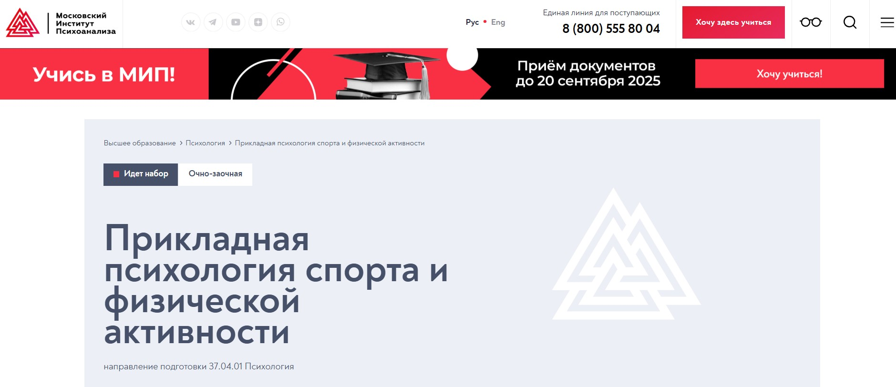⭐ Рейтинг: 4.8
- Сайт: inpsycho.ru/higher_education_profile/49
- Полная стоимость: 250 000 рублей за весь период с возможностью рассрочки, налогового вычета и участия в грантовых программах.
- Рассрочка: От 10 500 рублей в месяц на 24 месяца с беспроцентным периодом.
- Длительность: 2,5 года (очно-заочная форма).
- Документ: Диплом магистра государственного образца по направлению «Психология».
- Трудоустройство: Активное сопровождение через карьерный центр, рекомендации в спортивные клубы и команды, возможность трудоустройства через закрытое сообщество практикующих психологов.
Особенности курса:
Образовательная программа ориентирована на подготовку практикующих специалистов, способных работать в реальных условиях спортивной среды. Студенты осваивают современные методики мотивации, психологической устойчивости и профилактики выгорания у спортсменов и тренеров. Обучение проходит в тесной связке с ведущими спортивными организациями — ЦСКА, футбольными академиями и сборными командами России. Уникальность — международный состав преподавателей и сочетание западных технологий с традициями отечественного спорта. Все обучающиеся получают место для практики независимо от формата обучения.
Преподаватели курса:
-
Бочавер Константин Алексеевич — доцент, кандидат психологических наук, специалист по психологии спорта высших достижений и стрессоустойчивости, участник программ подготовки олимпийских коучей.
-
Довжик Лидия Михайловна — доцент кафедры общей психологии, кандидат психологических наук, эксперт в области клинической и детской психологии, опыт в нейропсихологической коррекции.
-
Хватов Иван Александрович — заведующий кафедрой общей психологии, кандидат психологических наук, автор методик по социальному взаимодействию и личностному развитию.
Кратко о программе курса:
- Психология спортивной мотивации и командной динамики.
- Методы диагностики спортивной одаренности и ресурсов личности.
- Психологическая подготовка к соревнованиям и управление стрессом.
- Профилактика и сопровождение профессионального выгорания.
- Техники психокоррекции и коучинга в физической активности.
- Практические модули в спортивных организациях (ЦСКА, академии, сборные).
- Научно-исследовательская работа и интервизии с экспертами.
- Цифровая платформа InStudy: онлайн-доступ, видео-кейсы, сопровождение куратора.
Чему научитесь:
Научитесь анализировать психологическое состояние спортсменов, применять методы мотивации, помогать в преодолении стресса и настраивать на высокие результаты. Освоите профилактику выгорания и сопровождение команд как прикладной психолог в условиях спортивных организаций.
Преимущества и особенности:
- Работа с реальными спортивными командами и доступ к базам ЦСКА и академий.
- Обучение у практикующих психологов из России и Западной Европы.
- Гарантированная практика для всех студентов, включая дистанционный формат.
- Помощь в трудоустройстве через закрытое сообщество профессионалов.
- Государственный диплом магистра с возможностью карьерного роста в спорте и фитнесе.
- Гибкое дистанционное обучение с поддержкой кураторов и доступом к проектной деятельности.
Читайте отзывы учеников:
Выпускники отмечают высокую практическую ценность программы, вовлеченность преподавателей и системную поддержку на всех этапах. Многие подчеркивают, что получили не только знания, но и реальные контакты в спортивной среде. Студенты ценят гибкость графика, особенно при совмещении работы и учёбы, а также возможность применять изученные методики уже на практике. Многие отметили уверенность в себе как специалистах и переход на более высокий профессиональный уровень после завершения магистратуры.
Магистратура по психологии – Восточно-Европейский Институт Психоанализа
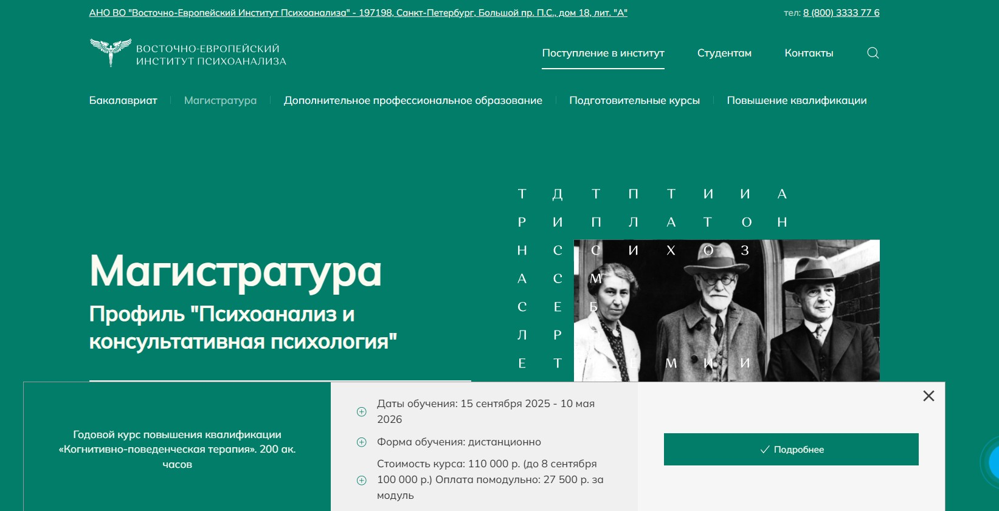⭐ Рейтинг: 4.8
- Сайт: eeip.ru/obrazovanie/magistratura
- Полная стоимость: от 100 000 рублей за семестр. Доступен образовательный кредит под 3% годовых с господдержкой. Возможен налоговый вычет по НДФЛ.
- Рассрочка: Платежи распределяются на весь период обучения — от 25 000 руб./мес. при ежеквартальной оплате.
- Длительность: 2 года (очная форма), 2 года 5 месяцев (очно-заочная и дистанционная формы).
- Документ: Диплом магистра по направлению «Психология» с профилем «Психоанализ и консультативная психология».
- Трудоустройство: Поддержка в запуске частной практики, участие в научных конференциях, содействие в публикациях и построении профессиональной репутации.
Особенности курса:
Эта образовательная программа ориентирована на выпускников, стремящихся углубить знания и развить навыки в области психоанализа и консультирования. Обучение построено по практико-ориентированной модели: студенты участвуют в мастер-классах, психологических тренингах и проводят собственные исследования. Программа готовит к работе в частной практике и вовлеченности в научное сообщество. Преподаватели — кандидаты и доктора наук, практикующие психологи с многолетним клиническим опытом. Формы обучения позволяют совмещать учёбу с работой — в том числе дистанционно.
Кратко о программе курса:
- Углублённое изучение дисциплин по психоанализу и психотерапии.
- Развитие навыков психологического консультирования на практике.
- Участие в научных конференциях и публикациях.
- Проведение собственных исследований и разработка авторских методик.
- Письменный экзамен по психологии при поступлении (онлайн).
- Завершение обучения защитой магистерской диссертации.
Чему научитесь:
Получите системное понимание психоаналитических подходов, освоите техники диагностики и консультирования, научитесь вести терапевтические сессии и самостоятельно реализовывать научные проекты.
Преимущества и особенности:
- Возможность поступления на базе любого высшего образования.
- Дистанционный и вечерний форматы для совмещения с работой.
- Практическая направленность: тренинги, мастерские, клинические кейсы.
- Доступ к образовательному кредиту с пониженной ставкой и господдержкой.
- Экзамены и тестирование проходят онлайн, без необходимости приезжать в СПб.
- Диплом государственного образца, подтверждающий квалификацию магистра.
Читайте отзывы учеников:
Студенты отмечают сильный преподавательский состав, гибкий график и высокую практическую ценность программы. Многие подчёркивают, что курсы подготовили их к реальной работе с клиентами и помогли запустить частную практику. Также часто упоминают доступность дистанционного формата и поддержку со стороны приёмной комиссии на всех этапах поступления.
Магистратура по психологии с дистанционными технологиями – Московский государственный психолого-педагогический университет
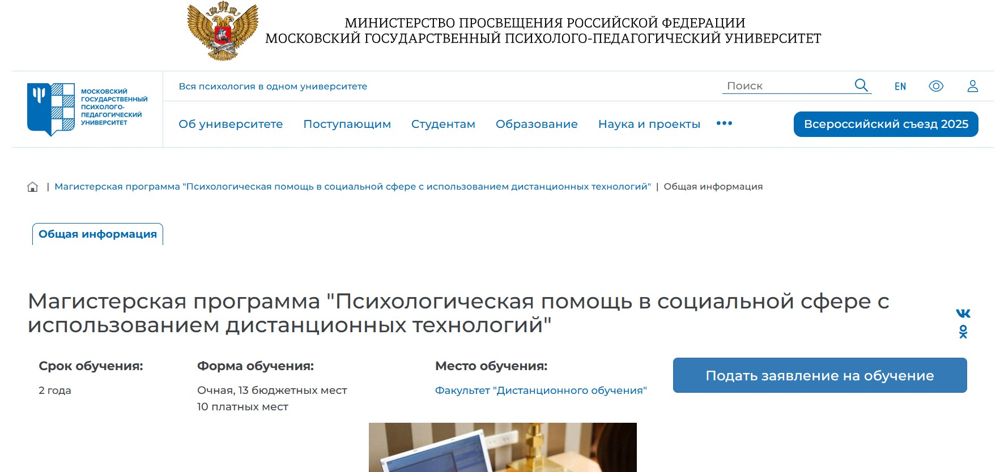⭐ Рейтинг: 4.7
- Сайт: https://mgppu.ru/project/482
- Полная стоимость: 10 платных мест, также доступны бюджетные места. Возможен налоговый вычет за обучение. Гранты на обучение предоставляются в индивидуальном порядке.
- Рассрочка: Доступна рассрочка на 12 месяцев — от 5 500 рублей в месяц.
- Длительность: 2 года очной формы с использованием дистанционных технологий.
- Документ: Диплом магистра государственного образца по направлению «Психология».
- Трудоустройство: Гарантированная помощь в трудоустройстве. Выпускники востребованы в социальной, медицинской и образовательной сферах, в том числе как онлайн-консультанты.
Особенности курса:
Программа сочетает очную и дистанционную формы, что позволяет обучаться студентам со всей России и из других стран. Обучение охватывает ключевые направления практической психологии: консультирование, психодиагностику, реабилитацию, коррекционную работу и профилактические программы. Учебный процесс включает три модуля и практико-ориентированную составляющую с обязательными практиками. Студенты получают опыт работы как очно, так и в онлайн-формате. Факультет дистанционного обучения — один из лидеров в разработке методик дистанционной психологической помощи. Выпускники участвуют в государственных проектах и востребованы на рынке труда.
Кратко о программе курса:
- Разработка авторских программ психологической помощи.
- Проведение коррекционных и реабилитационных тренингов.
- Онлайн и очное консультирование разными методами.
- Создание и адаптация методик психодиагностики.
- Научные исследования в области психологической поддержки.
- Обучение по пяти видам профессиональной деятельности: коррекционно-развивающий, научно-исследовательский, просветительско-профилактический, консультативный и реабилитационный.
- Прохождение практик в реальных условиях под руководством специалистов.
- Государственная итоговая аттестация с защитой диссертации.
Чему научитесь:
Вы освоите современные методы психологической помощи, научитесь разрабатывать программы поддержки, проводить тренинги и консультирование онлайн. Получите навыки диагностики, реабилитации и научной работы.
Преимущества и особенности:
- Очная форма с дистанционными технологиями — гибкость и доступность.
- Бюджетные места и помощь в трудоустройстве после окончания.
- Государственный диплом магистра, признаваемый во всех сферах.
- Опыт научной и практической работы с уязвимыми группами населения.
- Возможность участвовать в государственных психологических проектах.
- Высокая востребованность выпускников в профильных учреждениях.
- Руководство программы — кандидат наук и доцент с практикой в области дистанционной психологии.
Читайте отзывы учеников:
Студенты отмечают качественный уровень преподавания, удобное расписание и четкую организацию дистанционных занятий. Многие подчёркивают, что практики помогли почувствовать себя настоящим специалистом уже во время учёбы. Отмечают поддержку со стороны преподавателей и вовлечённость в реальные проекты. Выпускники говорят о быстром трудоустройстве и востребованности полученных навыков.
Лучшие дистанционные курсы переподготовки по психологии
Курсы переподготовки — это возможность получить новый квалификационный уровень и расширить образование. Мы составили рейтинг программ, где психология подается максимально удобно: дистанционная или заочная форма, удаленное обучение и даже гибридная система позволяют легко поступить и освоить программу переподготовки. Главное преимущество — гибкость и практическая направленность. Программы включают психологическое консультирование, клиническая и организационная психология. После получения диплома можно сразу работать по специальности, применяя знания дистанционно и офлайн.
Бакалавриат по психологии – Московский институт психологии
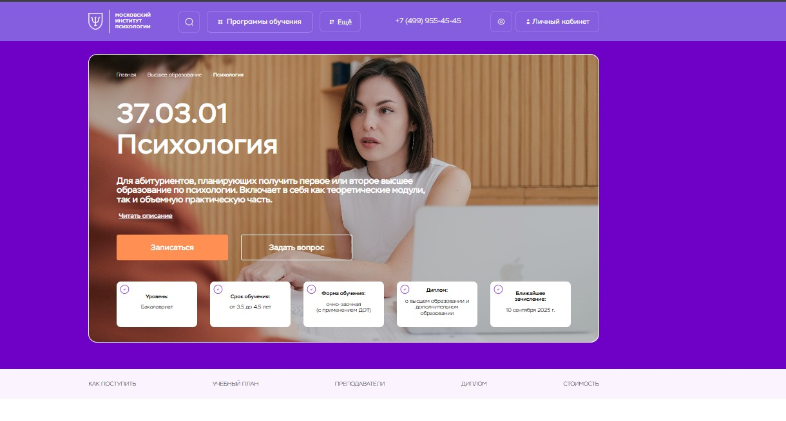⭐ Рейтинг: 5.0
- Сайт: mip.institute/bachelor/psikhologiya
- Полная стоимость: от 363 375 ₽ при оплате за весь срок обучения; доступен налоговый вычет. Гранты на обучение не предоставляются.
- Рассрочка: от 7 900 ₽ в месяц при оплате от 1 года, беспроцентная рассрочка.
- Длительность: от 3,5 до 4,5 лет в зависимости от формы и предыдущего образования.
- Документ: диплом о высшем образовании и диплом о дополнительном образовании с международным приложением.
- Трудоустройство: институт поддерживает выпускников при старте частной практики, помогает в интеграции в профессиональное сообщество и развитии карьеры.
Особенности курса:
Обучение построено в смешанном формате с применением дистанционных технологий, что позволяет совмещать учёбу с работой. Программа включает не только теоретические дисциплины, но и глубокую практическую подготовку через работу с реальными кейсами. Абитуриенты без ЕГЭ могут поступить по внутренним испытаниям. Уже на четвёртом курсе студенты получают вторую специализацию — бесплатно и без увеличения срока обучения. Дипломы ценятся как в России, так и за границей благодаря международному приложению.
Преподаватели курса:
-
Перемолотова Ирина Александровна — семейный психолог, КПТ-терапевт, арт-терапевт, супервизор, коуч с 16-летним стажем, руководитель программ в институте.
Кратко о программе курса:
- Всеобщая история
- Физическая культура и спорт
- Информатика
- Методы научного исследования
- Русский язык и культура речи
- Введение в профессию
- Анатомия и физиология человека
- Общая психология
- Иностранный язык
- Дисциплины по специализациям: семейная, корпоративная, кризисная психология
- Практические модули и супервизии
Чему научитесь:
Вы освоите ключевые психологические дисциплины, научитесь работать с клиентами, решать внутренние конфликты, выходить из стресса и применять терапевтические методики в реальных условиях.
Преимущества и особенности:
- Дистанционное и очно-заочное обучение с гибким графиком — подходит работающим студентам.
- Получение двух дипломов: по бакалавриату и по дополнительной специализации.
- Поступление без ЕГЭ для лиц с профильным или непрофильным образованием.
- Скидки до 30% — за высокие баллы ЕГЭ, при оплате в рассрочку, для льготных категорий.
- Возврат средств в течение двух недель при отказе от обучения.
- Поддержка на всех этапах — от подачи заявки до трудоустройства.
Читайте отзывы учеников:
Студенты отмечают высокий уровень преподавания, практико-ориентированность курсов, удобство онлайн-формата и поддержку кураторов. Многие подчёркивают, что обучение помогло не только начать карьеру психолога, но и глубже понять себя, улучшить коммуникацию и личный рост.
Обучение на клинического психолога – Институт Smart
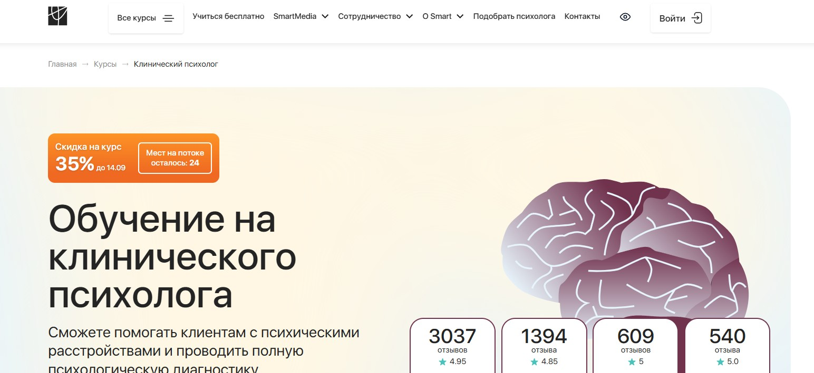⭐ Рейтинг: 5.0
- Сайт: smart-inc.ru/clinic-psycholog
- Полная стоимость: от 234 900 ₽ (со скидкой 35%). Возможность оформить налоговый вычет — вернуть 13% от суммы обучения.
- Рассрочка: от 9 788 ₽ в месяц на 24 месяца без переплат. Первая оплата — через месяц после начала занятий.
- Длительность: от 13 месяцев (650 часов).
- Документ: Диплом о профессиональной переподготовке, признанный в РФ. Регистрация в ФРДО. Дополнительно — диплом MBA (Чехия) и международный диплом HISTES (Гамбург) в пакетах PLUS и MBA.
- Трудоустройство: Центр карьеры помогает начать практику: предоставляет первых клиентов, организует супервизии, консультации с коучами и доступ к сообществу специалистов.
Особенности курса:
Обучение построено на практике: разбор реальных кейсов, групповые супервизии, отработка навыков в мини-группах и тройках с обратной связью от психологов-практиков. Программа подойдёт как новичкам, так и специалистам, хотите сменить профессию или углубить знания. Доступ к материалам — навсегда. Поддержка кураторов 24/7, личный ассистент и менторы помогают с первого дня. Интеграция с ОППЛ и АППП даёт выпускникам льготы при вступлении в профессиональные сообщества.
Преподаватели курса:
-
Кристина Юст — клинический психолог с опытом более 6 лет, более 4000 часов консультирования, специалист по детской нейропсихологии.
-
Альбина Собина — клинический и полимодальный психолог, супервизор ОППЛ, преподаватель с практикой с 2006 года, эксперт по эмоциональному интеллекту.
Кратко о программе курса:
- Основы клинической психологии и патопсихологии.
- Психофизиология и нейропсихология.
- Психодиагностика и методы оценки расстройств.
- Работа с депрессией, ПТСР, БАР, ОКР, ПРЛ и другими состояниями.
- Психосоматика и влияние эмоций на здоровье.
- Психотерапия: направления и практика.
- Детская и подростковая клиническая психология.
- Психофармакология.
- Подготовка к самостоятельной практике, личный бренд и трудоустройство.
- 134 часа практик: супервизии, разбор случаев, групповые работы.
- Сессии «Вопрос-ответ» и live-вебинары с экспертами.
Чему научитесь:
Научитесь выявлять и работать с основными психическими расстройствами, ставить диагнозы, разрабатывать программы помощи и проводить консультирование взрослых и детей. Получите навыки диагностики, терапии и поддержки в рамках клинической практики.
Преимущества и особенности:
- Практико-ориентированная программа с 650 часами и реальными кейсами.
- Гарантированный доступ к первым клиентам через Центр карьеры.
- Международные документы и членство в ОППЛ на льготных условиях.
- Гибкая рассрочка без переплат — начинаете платить только через месяц.
- Дистанционное обучение с доступом 24/7 и поддержкой экспертов.
- Индивидуальное сопровождение: кураторы, менторы, тьюторы и личные ассистенты.
Читайте отзывы учеников:
Студенты отмечают высокий уровень преподавания, практическую пользу курса и оперативную поддержку кураторов. Многие подчёркивают, что программа помогла начать частную практику и найти клиентов уже во время обучения. Особенно ценят чёткую структуру, доступные объяснения и возможность совмещать учёбу с работой и личной жизнью.
Клиническая психология – Московский институт психологии
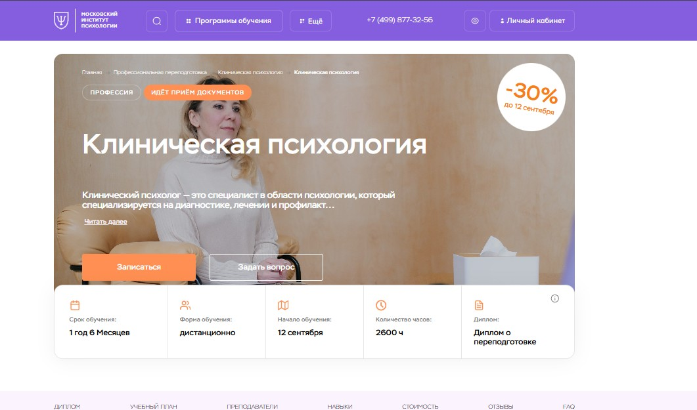⭐ Рейтинг: 5.0
- Сайт: mip.institute/professions/klinicheskaya-psihologiya/klinicheskaya-psihologiya
- Полная стоимость: 159 489 ₽ вместо 228 000 ₽. Возможна беспроцентная рассрочка на 12 месяцев и возврат 13% через налоговый вычет.
- Рассрочка: От 13 300 ₽ в месяц на 12 месяцев без переплат.
- Длительность: 1 год 6 месяцев (2600 часов).
- Документ: Диплом о профессиональной переподготовке с международным приложением.
- Трудоустройство: Поддержка при запуске частной практики, вступление в ОППЛ — крупнейшее профессиональное сообщество психологов в России.
Особенности курса:
Программа подготовки клинических психологов в Московском институте психологии реализуется в дистанционном формате и охватывает все ключевые направления клинической практики. Обучение включает научную базу по патопсихологии, нейропсихологии, психотерапии и психосоматике. Слушатели получают навыки диагностики, составления тактики вмешательства и работы с запросами клиентов. Уделяется внимание этике, супервизии и интервизии. В программу входят практические занятия, разбор реальных кейсов, домашние задания с обратной связью от преподавателей и постоянная поддержка куратора. Диплом, выдаваемый по итогу, признан в России и за рубежом.
Преподаватели курса:
-
Леонов Михаил Михайлович — кандидат биологических наук, клинический психолог и сексолог с 17-летним стажем, специалист по когнитивно-поведенческой терапии и схема-терапии.
-
Волченкова Анастасия Александровна — кандидат психологических наук, клинический и нейропсихолог, сертифицированный детский гештальт-терапевт с 10-летним стажем практики.
Кратко о программе курса:
- Клиническая психология и этический кодекс.
- Нейропсихология и патопсихология.
- Психосоматика и работа в соматической клинике.
- Основы психиатрии и неврологии.
- Психологическое консультирование и психотерапия.
- Диагностика и работа с зависимостями, неврозами, травмами.
- Возрастная и геронтологическая психология.
- Суицидальное и самоповреждающее поведение.
- Судебно-психологическая экспертиза и психодемия.
- Практикумы по диагностике и терапии.
- Супервизия, интервизия, групповая работа.
Чему научитесь:
Вы освоите методы диагностики, научитесь проводить клиническое интервью, определять психические расстройства и строить терапевтическую стратегию. Получите навыки консультирования по запросам: кризис, аддикции, горе, неврозы, травмы. Научитесь работать в рамках профессиональной этики и применять современные подходы в практике.
Преимущества и особенности:
- Дистанционное обучение с возможностью учиться из любой точки мира.
- Диплом с международным приложением и признанием в профессиональном сообществе.
- Гарантированная поддержка при запуске частной практики через партнёрство с ОППЛ.
- Реальные кейсы, практические задания и обратная связь от опытных преподавателей.
- Скидка 30% до 12 сентября и возможность вернуть часть средств через налоговый вычет.
- Беспроцентная рассрочка на 12 месяцев от банков-партнёров.
- Практикумы, вебинары и доступ к библиотеке учебных материалов.
- Возврат оплаты в течение первых двух недель, если формат не подойдёт.
Читайте отзывы учеников:
Слушатели отмечают чёткую структуру программы, отсутствие «воды» в материалах, высокую квалификацию преподавателей и эффективную поддержку кураторов. Многие отмечают, что после прохождения курса смогли начать практику и выйти на доход от 100 000 рублей в месяц. Особенно ценят возможность учиться без отрыва от жизни, получая при этом глубокие теоретические и практические знания.
Клинический психолог: обучение с нуля – Институт прикладной психологии
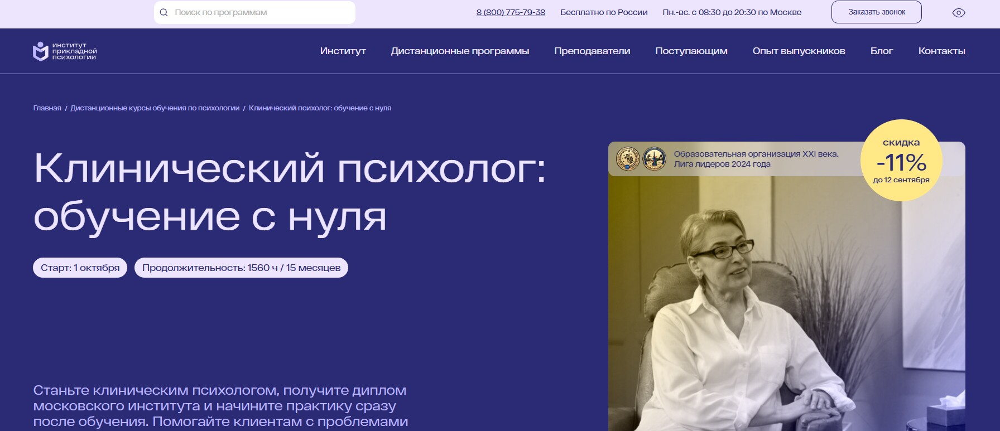⭐ Рейтинг: 4.9
- Сайт: ippss.ru/program/klinicheskaya-psikhologiya-s-nulya
- Полная стоимость: 130 600 рублей, со скидкой до 10 сентября — 116 700 рублей. Возможность оформить налоговый вычет до 13% от суммы.
- Рассрочка: 0% от банка или оплата частями через Яндекс Пэй — от 10 883 рублей в месяц на 12 месяцев.
- Длительность: 15,5 месяцев (1560 академических часов).
- Документ: Диплом о профессиональной переподготовке с квалификацией «Клинический психолог», зарегистрированный в ФИС ФРДО.
- Трудоустройство: Возможность пройти стажировку у партнёров, карьерные консультации, доступ к закрытому каналу с вакансиями и обучающие материалы по продвижению в интернете.
Особенности курса:
Программа ориентирована на тех, кто хочет стать практикующим специалистом с нуля. Обучение ведётся дистанционно по стандартам ФГОС и профстандарту «Психолог в социальной сфере». Студенты получают не только академические знания, но и практические навыки: работают с клиническими кейсами, участвуют в групповых практикумах, проходят супервизию и личные консультации. Включено обучение поиску клиентов и построению личного бренда. Доступ к материалам остаётся навсегда, а библиотека из более чем 10 000 вебинаров позволяет продолжать развитие после завершения курса.
Преподаватели курса:
-
Морозова Ольга Александровна — клинический психолог, коуч, ведущая терапевтических групп для подростков и взрослых, бизнес-тренер.
-
Михновец Дарья Александровна — магистр психологии, психоаналитически-ориентированный психотерапевт, клинический психолог с многолетним практическим опытом.
-
Тимофеева Анастасия Александровна — клинический психолог, аккредитованный полимодальный психотерапевт, супервизор и обучающий личный терапевт.
-
Дорофеева Елена Владимировна — эксперт в области профессиональной этики, ведёт дисциплину по основам работы психолога.
Кратко о программе курса:
- Введение в профессию и профессиональная этика.
- Психология развития и возрастная психология.
- Теоретические основы клинической психологии.
- Методики диагностики психических состояний.
- Психотерапевтические техники и подходы (когнитивно-поведенческий, психодинамический, гештальт и другие).
- Работа с расстройствами: тревожными, депрессивными, пограничными, пищевыми, психосоматическими.
- Практические задания с проверкой от преподавателя.
- 16 онлайн-консультаций с кураторами.
- 3 групповых практикума и 5 воркшопов по техникам терапии.
- Игра-трансляция по реальному клиническому запросу.
- Групповая и личная супервизия.
- 2 личные консультации с психологом.
- Техника «Коллаж» как инструмент самопознания специалиста.
- Работа с реальными кейсами: диагностика, составление заключений, подбор методов коррекции.
- Обучение продвижению и построению частной практики.
Чему научитесь:
Научитесь проводить диагностику, использовать эффективные психотерапевтические техники, работать с реальными клиентами, составлять программы тренингов и сопровождать людей с разными психологическими запросами, включая неврозы, депрессии и пограничные состояния.
Преимущества и особенности:
- Дистанционное обучение без обязательного наличия психологического образования.
- Диплом с правом официальной работы по всей России, зарегистрированный в федеральном реестре.
- Поддержка на старте карьеры: стажировки, карьерные консультации, обучающие материалы по продвижению.
- Доступ к более чем 10 000 записям вебинаров и ежемесячным встречам с экспертами.
- Практико-ориентированная программа с упором на применение знаний в работе.
- Работа под руководством опытных практиков и супервизоров.
- Гибкий график: можно совмещать с работой или учёбой.
- Постоянная поддержка кураторов и техническая помощь в любое время.
Читайте отзывы учеников:
Слушатели отмечают высокий уровень преподавания, доступность материалов и ценность практико-ориентированного подхода. Многие подчёркивают, что полученные знания превосходят опыт действующих специалистов. Студенты ценят возможность начать практиковать уже во время обучения, личную супервизию и психологическую поддержку. Особенно отмечают блок по профессиональному продвижению и стажировки, которые помогают выйти на рынок услуг.
Профессия психолог-консультант – Talentsy

⭐ Рейтинг: 4.9
- Сайт: talentsy.ru/professiya-psikholog
- Полная стоимость: От 15 625 ₽/мес при рассрочке, возможен налоговый вычет до 13%. Доступно 6 грантов на частичную оплату — до 110 000 ₽.
- Рассрочка: От 9 375 ₽ в месяц на срок до 24 месяцев, без переплат — проценты покрывает университет.
- Длительность: 12 месяцев.
- Документ: Диплом о профессиональной переподготовке установленного образца РФ и международный диплом MBA от Open European Academy (Прага).
- Трудоустройство: Студентам предоставляются первые клиенты через сервис pomogayu.ru, помощь в создании личного бренда и продвижении в интернете.
Особенности курса:
Обучение построено по интегративному подходу: вы отработаете 10 ключевых направлений психологии за год. Программа включает 450 часов практики — от тренировок в мини-группах до супервизии и работы с реальными клиентами. Все занятия проходят онлайн, но с живой обратной связью, интерактивом и поддержкой кураторов. Преподаватели — практикующие психологи с опытом от 20 лет, кандидаты и доктора наук. Учебные материалы обновляются, доступны с любого устройства и остаются у вас навсегда.
Преподаватели курса:
-
Ольга Виндекер — практикующий психолог с 30-летним стажем, член Российской Психотерапевтической Лиги, телеведущая и автор книг.
-
Инна Васильева — доктор психологических наук, профессор, специалист в области психологии интуиции.
-
Ксения Кунникова — кандидат наук, нейропсихолог, руководитель научных грантов РФФИ.
-
Елена Николаева — доктор биологических наук, заведующая кафедрой возрастной психологии РГПУ им. Герцена.
-
Ярослав Коряков — психотерапевт, супервизор Европейской конфедерации психоаналитической психотерапии.
-
Рустам Муслумов — кандидат наук, доцент УрФУ, эксперт в области педагогической психологии.
Кратко о программе курса:
- Знакомство с профессией психолога-консультанта.
- Мозг и поведение человека.
- Основы психологического консультирования.
- Психология личности и диагностика.
- Возрастная психология в практике консультирования.
- Семейная психология и сексуальность.
- Клиническая психология и кризисная помощь.
- Современные модальности терапии.
- Начало практики: работа с клиентами под наблюдением.
- Построение личного бренда и продвижение услуг.
Чему научитесь:
Вы освоите инструменты 10 психотерапевтических подходов, научитесь проводить диагностику, вести сессии, выявлять глубинные запросы и строить доверие с клиентом. Научитесь зарабатывать, работая онлайн из любой точки мира.
Преимущества и особенности:
- Программа рассчитана на новичков — можно начать без психологического образования.
- 450 часов практики с живой обратной связью и супервизией.
- Гарантированное начало практики: первые клиенты через собственный сервис консультаций.
- Выпускники получают два диплома — российский и международный, с правом работать в ЕС.
- Поддержка кураторов, специалиста по личному бренду и служба заботы на весь срок обучения.
- Обучение полностью онлайн, можно совмещать с работой.
- Возможность оформить налоговый вычет и получить грант до 110 000 ₽.
- Преподаватели — ведущие эксперты, члены профессиональных ассоциаций.
Читайте отзывы учеников:
Студенты отмечают, что курс помог кардинально сменить профессию и начать зарабатывать от 100 000 ₽, работая онлайн. Подчеркивают доступность материала даже для новичков, поддержку кураторов и реальную практику с клиентами. Высокая оценка преподавателей, качество видеоуроков и удобство платформы. Многие отмечают, что изменилось не только их профессиональное, но и личное качество жизни.
Клиническая психология – Психодемия
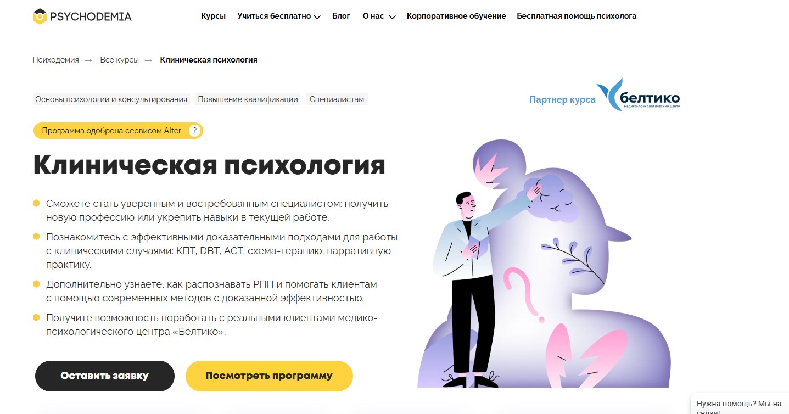⭐ Рейтинг: 4.9
- Сайт: psychodemia.ru/clinicalpsychology
- Полная стоимость: От 367 974 ₽ до 505 601 ₽ в зависимости от тарифа. Доступен налоговый вычет до 13% от суммы курса.
- Рассрочка: От 15 332 ₽ в месяц на 24 месяца без переплаты.
- Длительность: 2 года (от 1061 академического часа).
- Документ: Диплом о профессиональной переподготовке установленного образца (при наличии высшего образования). Без диплома — сертификат Психодемии.
- Трудоустройство: Возможность практики в медико-психологическом центре «Белтико», участие в реальных диагностических сессиях, доступ к закрытым мероприятиям для выпускников и обмен опытом с коллегами.
Особенности курса:
Программа включает 70% практики и 30% теории, что позволяет эффективно освоить навыки клинической работы. Обучение построено на актуальных доказательных методах: КПТ, DBT, АСТ, схема-терапия, нарративная практика. Студенты участвуют в демосессиях, супервизиях, интервизиях, работают с чат-ботом для отработки базовых навыков. Предусмотрена практика в реальном центре с разбором записанных консультаций и возможностью проведения сессий под контролем. Уделяется внимание этике, мультикультурной компетентности и работе с психоfarmакологией. Курс одобрен сервисом Alter и вошёл в топ-5 премии «Digital Learning 2023».
Преподаватели курса:
-
Галина Лайшева — кандидат психологических наук, сертифицированный семейный и когнитивно-поведенческий терапевт, более 12 лет опыта в психиатрической помощи детям и взрослым, автор курсов по суицидологии, контрибьютор ForbesLife.
Кратко о программе курса:
- Биологические основы поведения и нейроотличия при расстройствах.
- Психиатрия и патопсихология: диагностика и дифференциация состояний.
- Клиническое интервьюирование и диагностическое собеседование.
- Психофармакология и взаимодействие с психиатрами.
- Работа с расстройствами настроения, тревожными, обсессивно-компульсивными состояниями.
- Подходы к терапии: КПТ, DBT, АСТ, схема-терапия, нарративная практика.
- Работа с суицидальным поведением, аддикцией, психотическими расстройствами.
- Диагностика и поддержка клиентов с хроническими заболеваниями.
- Этические аспекты и мультикультурная компетентность.
- Разбор клинических кейсов, практика написания заключений, анализ сессий APA.
- Science Slam, peer-to-peer разборы, самостоятельная работа и рефлексивные встречи.
- Практика в центре «Белтико»: составление заключений и реальные сессии.
- Формирование терапевтического альянса, психообразование, мотивация клиентов.
- Совместная работа с врачами и смежными специалистами.
- Модули по пищевым расстройствам, травматическому опыту и профилактике.
Чему научитесь:
Научитесь распознавать психические расстройства, строить терапевтические стратегии, использовать доказательные методы, работать с клиентами в кризисе, проводить диагностику и поддерживать приверженность лечению.
Преимущества и особенности:
- Практико-ориентированная программа с участием в реальных кейсах и клинических сессиях.
- Доступ к более чем 100 видеоконсультациям западных и российских специалистов.
- Поддержка куратора и рефлексивные встречи для личностного и профессионального роста.
- Практика в профильном центре «Белтико» с возможностью работы с реальными клиентами.
- Обучение по государственной лицензии с получением официального диплома.
- Форматы: вебинары, тренажёр-бот, групповые супервизии, научные разборы и peer-to-peer анализ.
- Бонусные модули по этике, мультикультурности и расстройствам пищевого поведения.
- Курсы включают подготовку к сдаче итогового экзамена с обратной связью от преподавателей.
Читайте отзывы учеников:
Студенты отмечают высокий уровень практики, понятное объяснение сложных тем, поддержку кураторов и реальную применимость знаний в работе. Многие ценят глубину диагностики, разнообразие форматов и возможность отработать навыки на симуляциях и реальных сессиях. Отмечают востребованность полученных компетенций как в частной практике, так и в коммерческих организациях.
Профессиональная переподготовка в клинической и кризисной психологии – Национальная академия дополнительного профессионального образования
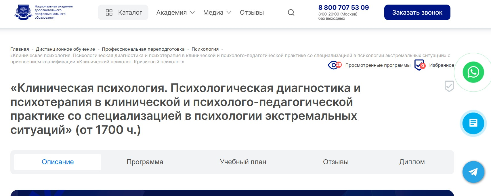⭐ Рейтинг: 4.8
- Сайт: nadpo.ru/do/klinicheskaya-psikhologiya-psikhologicheskaya-diagnostika-i-psikhoterapiya-v-klinicheskoy-i-psikholo_2064/
- Полная стоимость: от 92 300 ₽ (до 263 800 ₽ в зависимости от тарифа), доступен налоговый вычет 13% по расходам на обучение.
- Рассрочка: от 7 692 ₽/мес. на срок до 24 месяцев, 0% переплат.
- Длительность: от 14 месяцев (не менее 1700 академических часов).
- Документ: Диплом о профессиональной переподготовке, соответствующий ФГОС, заносится в ФИС ФРДО.
- Трудоустройство: Гарантированный старт: помощь в трудоустройстве, консультации по карьере, резюме, собеседованиям и развитию частной практики.
Особенности курса:
Обучение сочетает глубокую теоретическую базу по клинической и кризисной психологии с интенсивной практикой. Программа включает более 700 часов работы с реальными кейсами, отработку методик в тройках и супервизии от практикующих психологов. Студенты получают доступ к платформе с запросами от реальных клиентов, начинают принимать первые сессии ещё до окончания курса. Бесплатные подписки на ЛитРес и Библиоклуб, аудиолекции, воркшопы и ведение карьерного портфолио делают процесс комплексным и удобным. Уникальная методика подготовки позволяет освоить профессию с нуля и выйти на рынок с готовыми навыками и клиентами.
Преподаватели курса:
-
Тарасов Сергей Васильевич — кандидат психологических наук, доцент, стаж практики с 2000 года.
-
Егорова Наталья Николаевна — кандидат психологических наук, более 22 лет в области клинической и практической психологии.
-
Челнокова Ирина Александровна — кандидат психологических наук, член Российской ассоциации когнитивно-поведенческой терапии.
-
Санжапова Эльмира Викторовна — кандидат педагогических наук, доцент, опыт с 2005 года.
-
Галдина Александра Михайловна — клинический психолог и преподаватель с 2011 года.
Кратко о программе курса:
- Основы законодательства и этики в психологии.
- Общая, возрастная и социальная психология.
- Психология личности, семьи и организационная психология.
- Психофизиология, нейропсихология, анатомия и физиология ЦНС.
- Психосоматика, патопсихология, основы психиатрии.
- Психодиагностика и психологическое консультирование.
- Клиническая психология в геронтологии и детской практике.
- Психотерапия: теория и практика, включая когнитивно-поведенческие и арт-терапевтические методы.
- Введение в кризисную психологию и работу в экстремальных ситуациях.
- Диагностика и вмешательство при ПТСР, панических атаках, выгорании и суицидальных состояниях.
- Техники дистанционного консультирования и поддержка в семейных кризисах.
- Работа с травмой, стрессом, эмоциональной стабилизацией и ресурсами клиента.
- Практикумы по психотерапии, детской клинике, арт-терапии и диагностике.
- Профилактика вторичной травматизации и профессионального выгорания.
- Итоговая аттестация и междисциплинарный экзамен.
Чему научитесь:
Вы освоите методы диагностики и терапевтической помощи при кризисных состояниях, научитесь работать с травмой, выгоранием и тревожными расстройствами, проведёте сотни часов практики и сможете консультировать взрослых и детей как в очном, так и в онлайн-формате.
Преимущества и особенности:
- Гарантированный старт с клиентами: доступ к платформе с реальными запросами сразу после обучения.
- Более 700 часов практики с преподавателем, воркшопами и отработкой в тройках.
- Диплом, внесённый в государственный реестр ФИС ФРДО — подтверждение квалификации.
- Бесплатные подписки на ЛитРес и Библиоклуб, аудиолекции и материалы в личном кабинете навсегда.
- Карьерное сопровождение: помощь в составлении резюме, прохождении собеседований и развитии личного бренда.
- Формат дистанционного обучения с гибким графиком — подходит для работающих и новичков.
- Программа соответствует ФГОС, разработана экспертами с научной и практической экспертизой.
- Возможность получения налогового вычета 13% от стоимости курса.
Читайте отзывы учеников:
Слушатели отмечают высокую востребованность выпускников, реальную практику с первого месяца и поддержку кураторов. Многие подчёркивают, что благодаря курсу начали принимать клиентов до окончания обучения. Высокая оценка у преподавателей, структуры материалов и карьерного комбо. Особенно ценят помощь в трудоустройстве и консультации по личному бренду как для новичков, так и для практикующих психологов.
Практическая психология с дополнительной специализацией в области применения психотерапевтических технологий – АНО «НИИДПО»
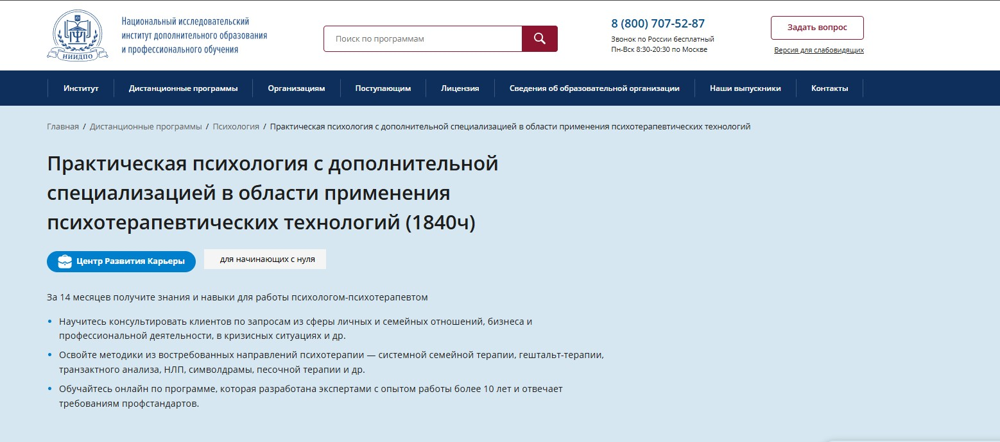⭐ Рейтинг: 4.7
- Сайт: niidpo.ru/seminar/psiholog-psihoterapevt-1840-chasov
- Полная стоимость: 88 800 ₽ (вместо 99 500 ₽ до 12 сентября 2025 года), возможен налоговый вычет до 13%, помощь в оформлении документов.
- Рассрочка: от 8 295 ₽/мес на 12 месяцев без переплат и первого взноса, или оплата частями через Яндекс PAY.
- Длительность: 60 недель (14 месяцев), с возможностью ускоренного прохождения за 37 недель (8,5 месяцев).
- Документ: Диплом о профессиональной переподготовке от московского института с двумя квалификациями — практический психолог и психолог-психотерапевт. Признан на всей территории России.
- Трудоустройство: Поддержка от Центра Развития Карьеры — помощь в поиске первых клиентов, подготовка к собеседованиям, доступ к закрытому чату с вакансиями, шаблонам документов и бесплатные тренинги по продвижению практики.
Особенности курса:
Обучение построено на сочетании академических знаний и практических навыков для реальной работы с клиентами. Программа включает 1840 академических часов: 790 — теории и 1036 — практики, кейсов и тестирования. Курс разработан с учётом требований ФГОС и профстандартов. Все материалы доступны в личном кабинете 24/7 на компьютере и в мобильном приложении. После окончания вы получаете бессрочный доступ к лекциям и пособиям. Включён бонус — доступ к 13 000+ вебинарам экспертов, включая более 1600 записей по психологии. Обучение полностью дистанционное — не нужно ни разу приезжать в Москву.
Преподаватели курса:
-
Богданова Наталья Александровна — кандидат психологических наук, эксперт по психотерапии и консультативной практике.
-
Колиниченко Ирина Александровна — кандидат психологических наук, доцент, практический психолог с более чем 10-летним опытом в социальной и общей психологии.
-
Семенова Наталья Александровна — кандидат психологических наук, практикующий специалист, эксперт в области семейной и возрастной психологии.
Кратко о программе курса:
- Основы социальной и педагогической психологии, стили взаимодействия, анализ конфликтов.
- Работа с малыми и большими группами, психология обучения и воспитания.
- Психологическое консультирование и диагностика.
- Методы психотерапии: системная семейная терапия, гештальт, транзактный анализ, НЛП, символдрама, песочная терапия.
- Коучинг-технологии и психологическая коррекция.
- Оценка уровней развития личности, личностные границы, самооценка.
- Работа в кризисных ситуациях, консультирование в сферах семьи, бизнеса и карьеры.
- Итоговая аттестация — междисциплинарный экзамен.
Чему научитесь:
После прохождения курса сможете работать с широким спектром запросов: отношения, профессиональное развитие, кризисы. Освоите современные методики и будете готовы к консультированию, проведению практик и началу частной деятельности.
Преимущества и особенности:
- Получаете два востребованных диплома — практический психолог и психолог-психотерапевт.
- Обучение полностью онлайн — учитесь в удобное время, не отрываясь от работы и семьи.
- Ускоренный формат — сокращенное обучение за 8,5 месяцев при интенсивном графике.
- Более 1000 часов практики и кейсы с обратной связью от преподавателей.
- Бесплатные вебинары каждый месяц, сертификаты за участие, доступ к архиву.
- Поддержка карьерного центра — от подготовки к старту практики до поиска первых клиентов.
- Возможность участия в супервизии с экспертами после поступления до 12 сентября.
- Бессрочный доступ к обучению — сохраняете материалы даже через годы.
Читайте отзывы учеников:
Слушатели особенно выделяют доступность материалов, высокий уровень преподавателей и практическую направленность курса. Многие отмечают, что уже во время обучения начали принимать первых клиентов. Постоянная поддержка, чёткая структура и бонусы, такие как библиотека вебинаров и помощь в продвижении, упрощают выход в профессию. Студенты часто подчёркивают, что программа реально готовит к работе, а не ограничивается теорией.
Когнитивно-поведенческая психотерапия в практике психолога – Институт Профессионального Образования
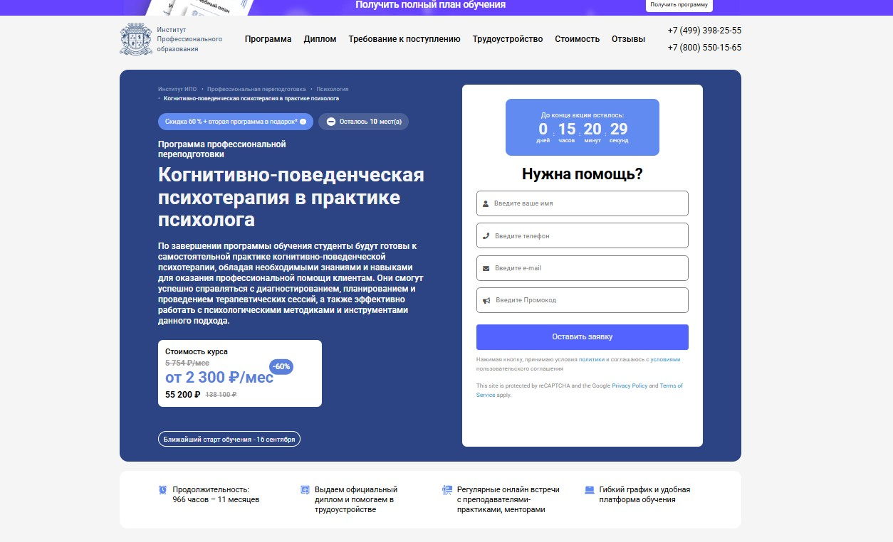⭐ Рейтинг: 4.7
- Сайт: ipo.msk.ru/professionalnaja-perepodgotovka/psihologija/kognitivno-povedencheskaya-psikhoterapii-v-praktike-psikhologa-pp966/
- Полная стоимость: От 55 200 ₽ вместо 138 100 ₽. Возможность оформить налоговый вычет — до 13% стоимости.
- Рассрочка: От 2 300 ₽/мес на 24 месяца без переплат.
- Длительность: 11 месяцев (966 часов), 10–12 часов в неделю.
- Документ: Диплом о профессиональной переподготовке, действующий по всей России.
- Трудоустройство: Поддержка в поиске работы — составление резюме, подготовка к собеседованиям, разослание откликов по вакансиям, помощь в продвижении на текущем месте.
Особенности курса:
Программа предназначена для тех, кто хочет освоить научно обоснованный метод помощи клиентам — когнитивно-поведенческую терапию. Подойдёт как новичкам в психологии, так и действующим специалистам, а также педагогам, врачам и соцработникам. Обучение проходит онлайн с гибким графиком. В программу входит практика, менторство, разбор кейсов, доступ к закрытому сообществу и библиотеке ЮРАЙТ. Ученики учатся работать с тревожностью, депрессией, ОКР и другими состояниями, применяя эффективные инструменты КПТ. Есть поддержка куратора и возможность получить два курса в подарок при выборе тарифа.
Преподаватели курса:
-
Олеся Александровна Круглушина — выпускница МГОУ, консультирующий психолог, психотерапевт с интегративным подходом, семейный консультант.
-
Таисия Антонкина — практический психолог, профессиональный коуч с опытом в консультировании.
-
Татьяна Геннадьевна Урывчикова — нейропсихолог, клинический психолог, член Ассоциации когнитивно-поведенческой психотерапии.
Кратко о программе курса:
- Основы психотерапии и когнитивной модели.
- Теоретические и методологические основы КПТ.
- Диагностика, концептуализация и построение плана терапии.
- Работа с когнитивными искажениями, автоматическими мыслями и глубинными убеждениями.
- Терапевтические отношения, альянс и этика в практике.
- Схема-терапия и рационально-эмоционально-поведенческая терапия.
- Этапы и методы психологического консультирования.
- Психодиагностика: методики, надежность, валидность.
- Работа с тревожными, обсессивными и посттравматическими состояниями.
- Клиент-центрированный подход и профессиональная этика.
- Практика: кейсы, вебинары, ролевые игры и сессии в парах.
- Итоговый междисциплинарный экзамен.
Чему научитесь:
Сможете проводить полноценные терапевтические сессии, ставить диагнозы, строить план работы с клиентом, применять техники когнитивной реструктуризации и поведенческих экспериментов, эффективно взаимодействовать с людьми, испытывающими эмоциональные и поведенческие трудности.
Преимущества и особенности:
- Официальный диплом, разрешающий консультировать клиентов по всей России.
- Менторство и живая обратная связь от практикующих психологов.
- Гибкий график и дистанционный формат — учиться можно из любой точки.
- Практическая ориентация: кейсы, сессии, тесты, разбор реальных ситуаций.
- Помощь в трудоустройстве: резюме, собеседования, рассылка в компании.
- Бонус: второй курс в подарок и скидка 60% при регистрации.
- Бессрочный доступ к материалам после окончания.
- Поддержка на всех этапах — от поступления до старта практики.
Читайте отзывы учеников:
Выпускники отмечают высокую организацию процесса, доступность преподавателей, практическую пользу материалов и действенную поддержку в трудоустройстве. Многие подчёркивают, что после курса начали принимать клиентов и развивать личную практику. На платформах вроде Яндекс, EDDU.PRO и Отзовик — более 3900 отзывов со средней оценкой 5.0. Студенты ценят прозрачность, структурированность программы и реальные навыки, полученные уже в процессе обучения.